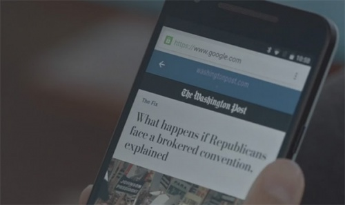

5 современных веб-технологий, о которых вы должны знать
Я хочу поделиться пятеркой самых популярных веб технологий. Они не являются обязательными. Но в то же время помогут ускорить работу и улучшить качество кода.
-
Web Components

Это новый стиль элементов для HTML5, который базируется на стандартах W3C. Компоненты позволяют создавать пользовательские элементы многократного использования для структур динамических страниц, таких как виджеты с вкладками, слайдеры изображений и выпадающие меню. Вместо того чтобы создавать всплывающее меню с маркированным списком, можно использовать тег dropdown
На официальном сайте Web Components доступно множество практических примеров, но очень мало пояснений того, где они могут пригодиться.
На данный момент еще слишком рано использовать Web Components в реальных проектах. Но через несколько лет все может измениться. Вот почему я считаю, что все веб-разработчики должны ознакомиться с этой современной веб технологией.
-
Polymer

Эта библиотека упрощает разработку, если вы работаете с Web Components API. С ее помощью вы получите встроенные элементы для добавления таких функций, как видео, слайдеры и даже виджеты Google Maps.
Целью Polymer является создание модульной структуры. Вот почему она позволяет создавать собственные виджеты на основе Web Components API. Таким образом появляется возможность добавить несколько виджетов на одну страницу без повторной записи кода.
Библиотека Polymer неразрывно связана с Web Components, и две эти технологии значительно изменяют методы модульной разработки сайтов.
-
AMP
Google всегда пытается улучшить интернет. Проект Accelerated Mobile Pages (сокращенно AMP) позволяет адаптировать любую веб-страницу для мобильных устройств по стандартному шаблону.
Нужно просто добавить небольшой код на свою страницу и позволить Google сделать все остальное. Если ваш сайт AMP-оптимизирован, он будет загружаться быстрее. Таким образом, сайт будет больше похож на оригинальное приложение.
Учитывая стремительный рост количества пользователей мобильных устройств, это технология веб разработки, на которую стоит обратить внимание. Она не подходит для интерактивных сайтов, но для блогов и новостных ресурсов технология AMP может стать революционным решением.
-
Gulp
Gulp позволяет автоматизировать рутинные задачи. Он умеет компилировать Sass в CSS, добавлять в код шаблоны или заплатки для браузеров, автоматически обновлять страницы после внесения в код каких-либо изменений.
-
TypeScript
Google недавно утвердил TypeScript в качестве предпочтительного языка для своего front-end фреймворка AngularJS. Это делает TS еще более привлекательным, потому что он помогает сэкономить время, как при написании общих скриптов, так и при разработке специализированных Angular-проектов.
TypeScript является не новым языком, а скорее надмножеством JavaScript. Поэтому, если вы знаете JS, вам будет легко использовать эту популярную веб технологию.